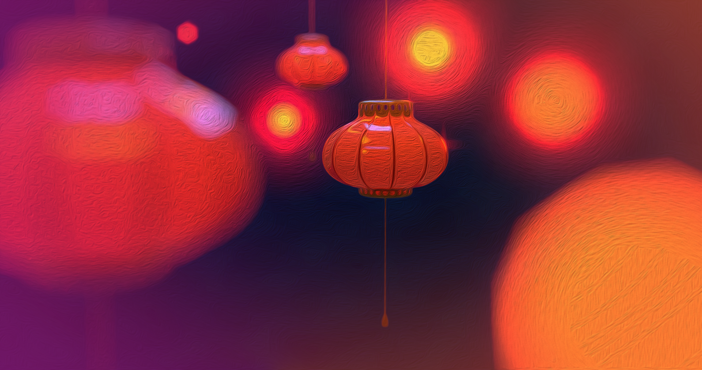
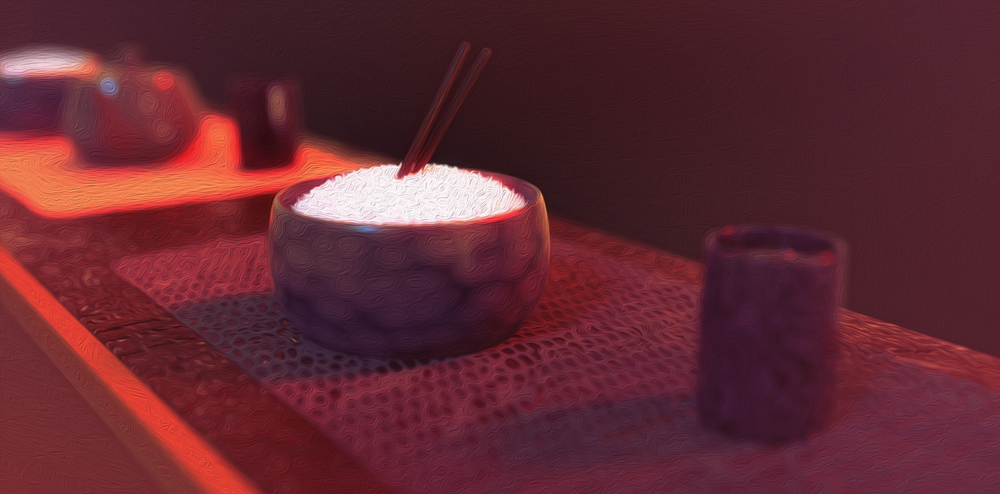
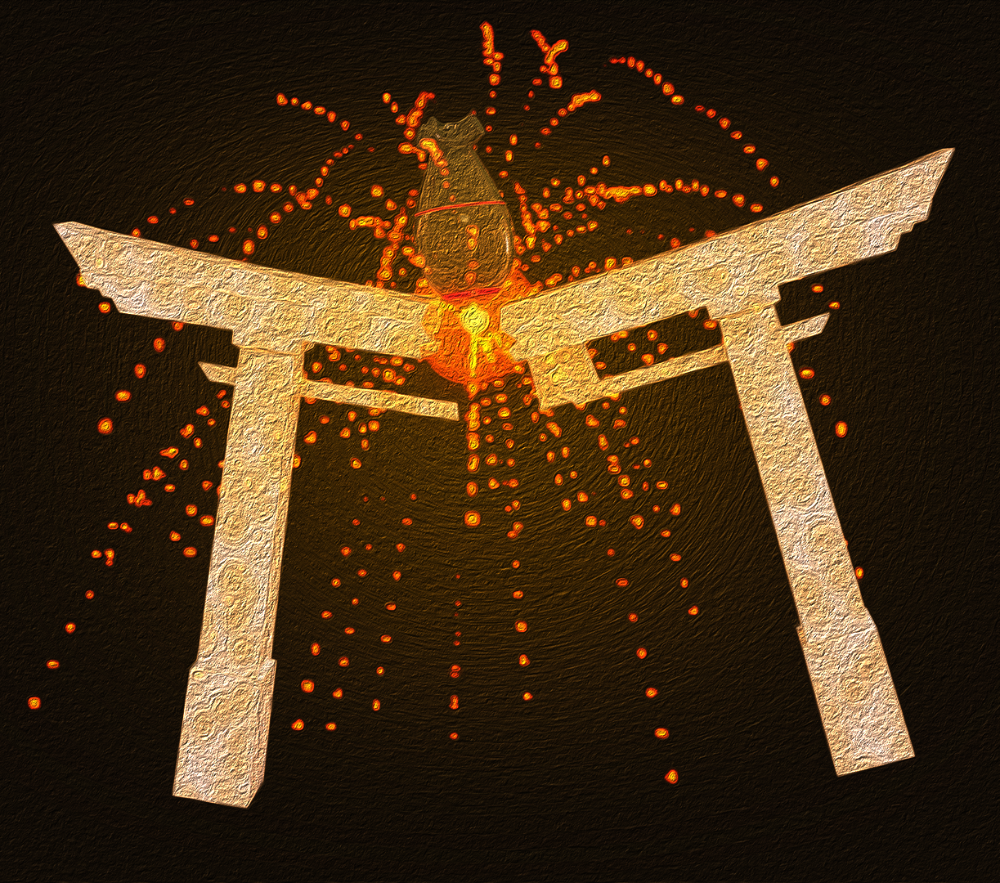

A snippet of the the 2017 publishing of Kazuo Ishiguro's "An Artist of the Floating World", simple used to provide context and style that the publishers associated with the novel.
Imaged Owned by Faber, photographed by John Dakers, Edited by Myself.
Created by Myself.
About Kazuo Ishiguro
Sir Kazuo Ishiguro, born November of 1954 is British novelist with a Japense ethnicity. Born in Nagasaki Japan and moving to Britain in early childhood, almost all his works are inspired from Japanes culture and history, however due to his upbringing being mostly foreign from Japan, he has often felt somewhat as an imposter to be speaking on such matters, however this mentality fails to be reflected in the critical acclaim his work receives. Ishiguro has written screenplays, songs, short stories as well as full fledged novels, the latter of which have all held nominations for major award bar from two. One of his works “An Artist of the floating world” has won the Costa ‘Book of The Year Award’ and a nobel prize in literature.
Red light districts have been called such due to the lighting of red lanterns indicating vacancy at the brothels,
The soft red hues of sensual indulgence is a common theme amongst many medias to this day.
This image is an artistic stylisation depicting a red light district present in the Floating World of Edo Japan.
Created by Myself.

The Socio-Historical Context of The Novel
The novel takes place in a war recovering ‘Unnamed’ city of Japan, Set a couple years after its surrender in 1945. The novel explores themes of tradition vs new age values. A common aspect of this novel, one of which its name stems, is the idea of ‘The Floating World’, while many meanings may be derived from this, the Floating World refers to ‘Ukiyo’, an expression of the leisure districts and the new economical influx within Edo Japan. As the idea of the Floating World opened up in Edo and its sister cities in the early 1600s, society and culture shifted into this new state, a soft sensual and pleasant; temptatious, mischievous and somewhat audacious mindset. The Floating World saw restaurensts, dinners, cinemas, woodblock paintings and galleries, as well as the famous Red Light District.
Restaurants, diners and bars were an ever present way to spend leisure time.
Food, drink and an atmospheric company provided relaxation in the Floating World.
Depicted here is a Sushi bar with gohan rice and green tea, with a deep, rich and cozy tonal palette, meant to reflect the ambiance of bars within the Floating World.
Created by Myself.

A Brief Synopsis
‘An Artist of the Floating World’ follows renowned painter Masuji Ono as he recalls back upon his life after the war and his role within it. Much of the world building is more implicitly written, derived from early life and pre war events interposed his more modern life. The structure follows no archetypal path, it borrows elements from a non linear storytelling structure by branching off into different times and places, however the majority of the narrative is told through one continuous time frame of a present day Ono. The events focussed on begin with his estate and how he attained such, as well as the attempts he’s made to restore the war damage. Ono spends time with the family he has left, his two daughters, one of which they are still attempting to find a husband, and his grandson. A boisterous, loud and energetic child who acts as a counter weight to Ono.
A Stimulus of Understanding
As life is learned, and the material world seemingly the creator of such, the nature of identity is shaped through a co-creational understanding of the self and where it resigns within its world. Weather looked upon from a deterministic viewpoint, seeing oneself as separate to the events constructed around them, or and Idealistic one, where consciousness and material are merely equal energies resonating their existence as one. Identity and belief will manifest into a shared reality, through the eyes of love or fear.
Imprints, Impressions and the Vulnerability of Youth
Whether or not identification with the body starts at birth or conception, the following years guide the most fundamental beliefs of self. Childhood wonder is so intrinsic to personal identity as this is when the absorption of the external world most heavily imprints itself into the subconscious. It is said that the joy of childhood stems from a so called lack of understanding of the ‘real world’, however it is the learning of this real world through values and vision of a limited scoped based in fearful missteps of the ego that dissolve joy and its childlike nature. It is belief of limitation which eradicate the wonder of youth, setting out the downfall of being many associate with age. As new ears and new eyes grasp at making sense of the physical plane, the nurture they receive shapes the nature of their reality. When Ono is recalling his younger self, he speaks on events surrounding a source of inspiration within his identity, his painting. His narration heavily implies that his father wished to eradicate this creative spark of which he deemed dangerous. We can see the impact this had upon him by not only his choice to reflect on it, but the language used, the magnitude of impact a memory holds will shape how it is perceived. As memory is multimodal, sensory imagery is used to by Ishiguro as a reflection of Onos recollections of the events following the discourse with his father, “Coming across my mother in the darkness… ‘There's a smell of burning around the house’... My mother was silent… ’It must be your Imagination.’ ” The incorporation of scent, use of visual and auditory illustration not only erect an eerie atmospheric tone but also capture the multisensory way in which the mind stores memory, crafting a tangible feeling and showing the impact of this moment on young Ono, by incorporating more than one mode of communication Ishiguro is demostraintg hte impact this attains on onno “Artists... live in squalor and poverty. They inhabit a world which gives them every temptation to become weak-willed and depraved” A comment base out of fear, this direct dialogue acting as a pathos hook, attempting to nitill the same insecrity in his son, that he has within himself
A redesign and re-rendering of Hokusai's famous "Great Wave off Kanagawa.", depicted as an art piece in a bamboo style display, Original piece by Hokusai, reinterperated by Myself.

The Manifestations of a Damaged Psyche
By having fear and art being so closely bonded; the act of seeing his creation proceed destruction, fear was instilled from that moment on linking his passion to a painful destruction. At his core programming, Ono’s being resonates with that of a destructive pendulum, one which is fed via his creative energy. The novel addresses manifestation of the mind through its narrative of the war, and propaganda that helped to fuel it which Ono took part in. Kazuo Ishiguro shows the power of manifestation by first setting up the childhood trauma, and linking it to present events. In the novel Ono admits how his artwork may have halted the surrendering of Japan during the second world war, and thus lead to its ultimatum of destruction. Ishiguro shows how consciousness and reality are interwoven, and why a damaged sense of self results in a damaged reality. It is important to note that, weather Ono’s actions were a direct cause of the devastation Japan faced, or statistically insignificant, his damaged sense of self see it as causal within his personal reality, solidifying its reality for him. Noriko, one of Ono’s daughters, is present during a conversation between Ono and Dr Saito, Dr Satio stating;
”I’m sure you’re too hard on yourself, Mr Ono”
This line of dialogue is a great indication of Ono, he is too hard on himself, every part of his being is too hard on himself, this is proved again later when 'The Tortoise’, a disciple of Ono's also comes in conflict with him surrounding his artwork after finding out of the shift in style Ono took, abandoned and betraying his colleges.
‘“Ono-san,” he said, in a near whisper, ”you are a traitor”’.
Here the words speak for themselves, the whisper alluding to a given up sorrowful feeling being projected into Ono truly reveal how much his feelings of inadequacy surrounding his art have pierced his being. At this point he is incapable of escaping the downfall associated with art as the conditioning of fear is so close to his self.
The Shrine of Meiji was destroyed in 1944 during the Tokyo air raids. The shrine served as a memorial to Emperor Meiji and his wife. The citizens then wishing to repent this loss of honor publicly funding it's restoration. The shrine underwent resection in 1958.
This piece Is simply meant to show a literal destruction of the land spoken about within the novel, in a stylistic manner.
Created by Myself.

Reflection, Projection and Realisation
Early into the novel we see Ono’s grandson, Ichiro, a young a boystrous spirit woth similar creative drives as his dranfather, however younger than Onos recalled self, and far less disicpline, Early on we see Ichrios facination with the art surrounding Ono Much as Ono's father attempted to snuff his creative flame through a fear that the way of the artist leads to an insecure livelihood, Onos reality possessed even greater misfortune, art was not merely an insecure lifestyle, but a destruction to life itself, thus the potential fear within him has evermore opportune to outweigh that of his fathers. As Ichiro has shown interst in art, much like ono himself at that age, it surfaecs his own ipmpreins, Ono is all too familar with the limitaions of idenity adn when convesing with his grandson as hes playing around, sketpad dsicarded in the room, they discuss the nature of Ichhiros play, “Then tell me, who were you?” “Lone rager!” “Lone ranger? is that the cowboy?” “Ichiro...wait a miment and listen… Its more intersint by far to pretedn to be someone like lord Yoshitsune… Ichiro liste… Ichiro, litesn to you Oji-san. Ichiro!” We see this arguementeive adn almost heated dialgoue as a rtigger for Ono. “ As Ichiro is apraoacihn a path that Ono himself as been down, its surfaces his own imprints, By correcting his Grandsons behavoiur hes reinacting his own conditoining, but by his ackoldmentg, and apology shortly after, implicltyly or not,a reaslitings has been made, one that is self aware due to the limitation placed upon him by his male rolde model, by saying that he can be what he wants, hes dovetaioling both fear and limitations, creating a healthier sense of self and identity in his grandson We here the [hjrase a tortued artsits a lot, its for creatiden dieasl and beauties that a fare more sparse in this shared reality
The poster of the 1954 Japnese film Godzilla, or ‘Gojira’. This is one of Ichiro common motifs and a source of excitement surrounding the novel, it also represents a Japanse tradition remade by America at a later date. The poster design by Takeo Kita, Edited slightly by Myself.

A Creative Take
Walking through the desolate, torn up environment, we never had imagined such chaos, we never had imagined it would end up like this, although we knew the consequences, we could not grasp the weight of them until they came crashing down
There's only a few of us left now, surviving with what we can in this harsh empty world. Most of our home city submerged under water, we overlooked it each day from a small hillside town just skirting out and around from where the destruction was most prevalent. The roads that were left, overgrown with reaching vines, as though they were ecstatic to finally wander free in this playground of cement that man had built. I suppose we could attempt to tidy our most common paths a little more, it's hardly any use though, with the rapid shift in climate, constant rising ocean, storms and erosion won't leave anything unscathed for long. The erie poltergust of decay feasting at anything smooth surfaced, quickly reducing it to a jagged nothing more than a vague shape of what it once was, until funnily enough, made smooth once more. The world far too volatile, with heat waves, blistering cold, barely any humans left. Who knew it would end up like this?
The first thing I noticed was how crowded we were, the other beings, not dissimilar from one another, felt compassionate, but had more than a sorry note strung around them. At the time I wasn't aware of much, I didn't have to be. As I learnt the routine of sleep and eat I slowly grew to understand this life, and the powers that govern it. Why were we always separated? I got used to the gods of destruction that came though our paths, although it’s clear these beings were not spiteful, as we disappeared slowly and slowly, I learned to fear them. We didn't have a family, we treated all as one, but I hadn't seen my real mother since birth, I can still hear her call out to me on nights where the wind picks up enough to latch her mournful strains to my ears, maybe it was just in my head. I suppose I just wanted answers, why condemned to a life of suffering? Why were we all so tightly close to one another? My time there with my brothers wasn't for long,one day they day came. Myself and a small gathering around me were thrown onto the cold metal spaceships, and still, why were we so close together?mThe journey was tiring, we could not sit for there was no room, so we stood, until we don't anymore, dragged from the vehicles, and thrown into a line. Room stained with blood and despair, we were not in panic for long, as they brought the tool up to the face of my brothers, the rod capturing our attention, as one after another they all fell still, now right at my forehead, the captivate bolt coiled back, then, lights out.
Animal agriculture, the consumption of meat, not only is it unethical, but it’s destroying our environment. Just one kilogram of slaughtered cows yields over twenty-five kilograms of C02 emissions. The depletion of natural aquirfires and the tilling of rich land for the harvesting of maize, the only product these cows will ever eat. The processing factories, transportation, import and export. With predcitions that meat and dairy industry will surpase that of oil companies in terms of green house gasses, the one way to avoid this cycle is to stop with murder, and its starts with yourself.
We have until 2030 to reduce global emissions by 50%, will you be part of those that wish to see us reach sustainability, or let the world burn?
The Reflection
This piece Is simply meant to show a literal destruction of the land spoken about within the novel, in a stylistic manner. Resonating with the torn up environment Japan faced after the war, I focus on the global environment after the violence inflicted on animals in factory farming. The pieces uses a first person narration style of storytelling, speaking and reflecting on past and present, much like ‘An Artist of the Floating World’ but then also creatively diverges from when the story shifts into the calf's perspective. Splicing in aesthetic and metaphorical effects of the shifting climate, I wished to illustrate the choice of suffering not only from the perspective of the human survivors, but also the animals which don't. By consuming paying, supporting and consuming violence you are part of the cycle, this story extends that principal in an insightful way, revealing a future that may not be too alien in times to come.